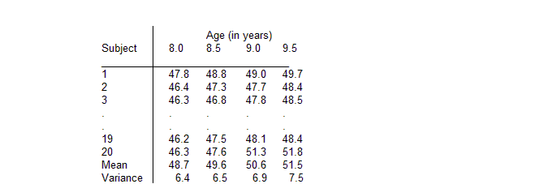
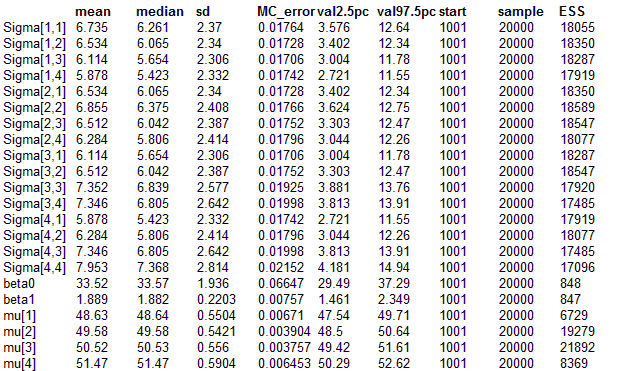

Jaws: repeated measures analysis of variance
Elston and Grizzle (1962) present repeated measurements of ramus (jaw) bone height on a
cohort of 20 boys over an 18 month period:
Interest focuses on describing the average growth curve of the ramus bone. The 4
measurements
Yi = {Y
i1, Y
i2, Y
i3, Y
i4} for each child i are assumed to be correlated and follow a multivariate normal (MVN) distribution with unknown population mean vector
μ and precision matrix
Ω. That is
Yi ~ MVN(
μ,
Ω)
The following location models for the population mean
μ were fitted in turn:
E(
μi) =
β0 Constant height
E(
μi) =
β0 +
β1 x
j Linear growth curve
E(
μi) =
β0 +
β1 x
j +
β2 x
j2 Quadratic growth curve
where x
j = age at jth measurement. Non-informative independent normal priors were specified for the regression coefficients
β0,
β1, and
β2. The population precision matrix
Ω was assumed to follow a Wishart(R,
ρ) distribution. To represent vague prior knowledge, we chose the the degrees of freedom
ρ for this distribution to be as small as possible (i.e. 4, the rank of
Ω). The scale matrix R was specified as a 4x4 diag(1) matrix which represents an assessment of the order of magnitude of the covariance matrix
Ω-1 for
Yi (see subsection on the use of the Wishart distribution in the "Multivariate normal nodes'' section of the Classic BUGS manual (version 0.50). Note that except for cases with very few individuals, the choice of R has little effect on the posterior estimate of
Ω-1 (Lindley, 1970).
BUGS language for the Jaws examplemodel
{
beta0 ~ dnorm(0.0, 0.001)
beta1 ~ dnorm(0.0, 0.001)
for (i in 1:N) {
Y[i, 1:M] ~ dmnorm(mu[], Omega[ , ])
}
for(j in 1:M) {
mu[j] <- beta0 + beta1* age[j]
}
Omega[1 : M , 1 : M] ~ dwish(R[ , ], 4)
Sigma[1 : M , 1 : M] <- inverse(Omega[ , ])
}
Data
list(M = 4, N = 20, Y = structure(
.Data = c(47.8, 48.8, 49.0, 49.7,
46.4, 47.3, 47.7, 48.4,
46.3, 46.8, 47.8, 48.5,
45.1, 45.3, 46.1, 47.2,
47.6, 48.5, 48.9, 49.3,
52.5, 53.2, 53.3, 53.7,
51.2, 53.0, 54.3, 54.5,
49.8, 50.0, 50.3, 52.7,
48.1, 50.8, 52.3, 54.4,
45.0, 47.0, 47.3, 48.3,
51.2, 51.4, 51.6, 51.9,
48.5, 49.2, 53.0, 55.5,
52.1, 52.8, 53.7, 55.0,
48.2, 48.9, 49.3, 49.8,
49.6, 50.4, 51.2, 51.8,
50.7, 51.7, 52.7, 53.3,
47.2, 47.7, 48.4, 49.5,
53.3, 54.6, 55.1, 55.3,
46.2, 47.5, 48.1, 48.4,
46.3, 47.6, 51.3, 51.8),
.Dim = c(20, 4)),
age = c(8.0, 8.5, 9.0, 9.5),
R = structure(
.Data = c(1, 0, 0, 0,
0, 1, 0, 0,
0, 0, 1, 0,
0, 0, 0, 1), .
Dim = c(4, 4)))
Inits for chain 1
list(beta0 = 40, beta1 = 1)
Inits for chain 2
list(beta0 = 10, beta1 = 10)
Results

Metropolis results
mean median sd MC_error val2.5pc val97.5pc start sample ESS
Sigma[1,1] 6.705 6.259 2.359 0.02164 3.546 12.49 5001 200000 11891
Sigma[1,2] 6.506 6.072 2.335 0.02182 3.383 12.28 5001 200000 11454
Sigma[1,3] 6.077 5.643 2.299 0.02331 2.98 11.76 5001 200000 9731
Sigma[1,4] 5.833 5.387 2.308 0.0243 2.718 11.56 5001 200000 9023
Sigma[2,1] 6.506 6.072 2.335 0.02182 3.383 12.28 5001 200000 11454
Sigma[2,2] 6.826 6.376 2.405 0.02304 3.601 12.64 5001 200000 10894
Sigma[2,3] 6.474 6.015 2.383 0.0245 3.273 12.35 5001 200000 9457
Sigma[2,4] 6.238 5.784 2.393 0.0254 3.023 12.21 5001 200000 8876
Sigma[3,1] 6.077 5.643 2.299 0.02331 2.98 11.76 5001 200000 9731
Sigma[3,2] 6.474 6.015 2.383 0.0245 3.273 12.35 5001 200000 9457
Sigma[3,3] 7.301 6.795 2.57 0.02809 3.874 13.72 5001 200000 8371
Sigma[3,4] 7.281 6.766 2.62 0.02936 3.792 13.78 5001 200000 7967
Sigma[4,1] 5.833 5.387 2.308 0.0243 2.718 11.56 5001 200000 9023
Sigma[4,2] 6.238 5.784 2.393 0.0254 3.023 12.21 5001 200000 8876
Sigma[4,3] 7.281 6.766 2.62 0.02936 3.792 13.78 5001 200000 7967
Sigma[4,4] 7.873 7.322 2.778 0.0316 4.171 14.74 5001 200000 7728
beta0 33.62 33.63 1.932 0.02356 29.8 37.43 5001 200000 6723
beta1 1.877 1.876 0.2196 0.002676 1.444 2.312 5001 200000 6733
mu[1] 48.64 48.64 0.55 0.002502 47.55 49.72 5001 200000 48317
mu[2] 49.58 49.58 0.5414 0.001547 48.51 50.65 5001 200000 122492
mu[3] 50.52 50.52 0.5548 0.001451 49.42 51.61 5001 200000 146265
mu[4] 51.46 51.46 0.5887 0.002323 50.29 52.62 5001 200000 64223